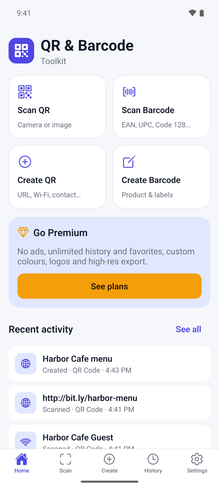
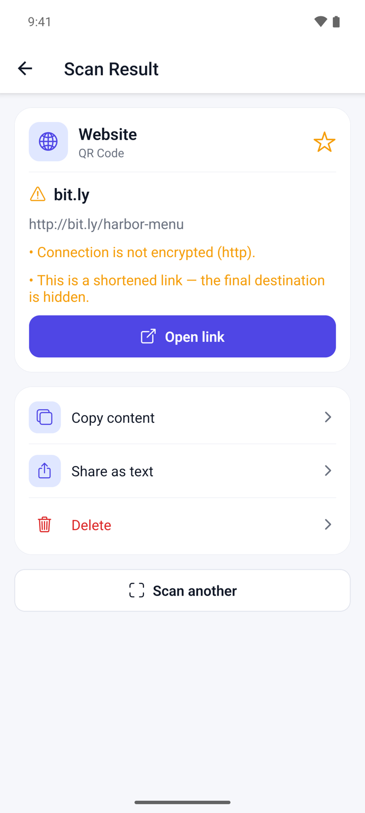

Ce que fait l'appli
QR & Barcode Toolkit scanne les QR codes et les codes-barres avec votre appareil photo ou à partir d'une photo, et affiche leur contenu avant que vous agissiez. Vous pouvez aussi créer vos propres QR codes et codes-barres, puis les enregistrer sous forme d'images ou les partager. L'appli existe en 21 langues et suit la langue de votre téléphone.
- Les codes sont lus sur votre appareil. Les liens ne s'ouvrent jamais tout seuls.
- Aucun compte. Votre historique reste sur votre téléphone.
- Lit les QR codes et 12 types de codes-barres, comme EAN-13, UPC-A et Code 128.
- Gratuite avec publicités. Un achat Premium unique supprime les publicités et ajoute des options de style.
Premiers pas
- Ouvrez QR & Barcode Toolkit. Home affiche quatre raccourcis : Scan QR, Scan Barcode, Create QR et Create Barcode.
- Appuyez sur Scan QR. La première fois, appuyez sur Allow camera, puis autorisez l'appareil photo quand Android vous le demande.
- Si vous préférez ne pas utiliser l'appareil photo, appuyez sur Scan from an image instead et choisissez une photo. Cela ne demande pas l'accès à toute votre photothèque.

Scanner un code
- Appuyez sur Scan en bas de l'écran, ou sur un raccourci de scan dans Home.
- En haut, choisissez QR Code ou Barcode.
- Dirigez l'appareil photo vers le code. Gardez le code-barres à l'intérieur du cadre.
- Dans le noir, appuyez sur le bouton de la lampe torche. Pour lire un code à partir d'une photo, appuyez sur le bouton image et choisissez la photo.
- Scan Result s'ouvre dès que le code est lu. Il indique le type de contenu, par exemple Website, Wi-Fi, Contact ou Product.
- Appuyez sur Copy content ou Share as text, ou sur Scan another pour revenir à l'appareil photo.
Vérifier un lien avant de l'ouvrir
- Scannez un code qui contient une adresse web. Le résultat affiche le nom du site et l'adresse complète.
- Lisez les avertissements, s'il y en a. L'appli signale les liens non chiffrés (http), les liens raccourcis, les adresses IP brutes, les identifiants cachés et les caractères trompeurs.
- Appuyez sur Open link uniquement si vous faites confiance au site, puis sur Open pour confirmer.

Les autres types de codes ont leur propre bouton : Compose email, Call, Send message, Open in Maps ou Search the web. Chacun demande votre accord avant de quitter l'appli.
Lire un code Wi-Fi
- Scannez le QR code Wi-Fi. Le résultat affiche Network, Security et Password.
- Appuyez sur l'icône en forme d'œil pour afficher le mot de passe.
- Appuyez sur l'icône de copie à côté du mot de passe.
- Ouvrez les réglages Wi-Fi de votre téléphone et rejoignez le réseau avec le mot de passe copié. L'appli ne se connecte pas à votre place.

Créer un QR code
- Appuyez sur Create et choisissez QR Code.
- Sous Content type, choisissez Website, Text, Wi-Fi, Email, Phone, SMS, Contact ou Location.
- Remplissez les champs. Le QR code apparaît dès que les informations sont valides. Remplissez Title (optional) si vous voulez lui donner un nom dans votre historique.
- Sous Style, choisissez un modèle : Classic, Indigo ou Forest. Vous pouvez aussi modifier les couleurs Foreground et Background ainsi que le niveau de Error correction.
- Appuyez sur Save to history pour le conserver, sur Share pour envoyer l'image, ou sur Save image pour l'enregistrer dans votre galerie.

Les options avec un cadenas font partie de Premium.
Créer un code-barres
- Appuyez sur Create et choisissez Barcode.
- Sous Format, choisissez EAN-13, EAN-8, UPC-A, Code 128, Code 39 ou ITF-14.
- Saisissez la Value. La ligne sous le champ indique ce que le format accepte. Pour les codes produit, l'appli ajoute le chiffre de contrôle si vous l'omettez.
- Remplissez Title (optional) si vous voulez lui donner un nom.
- Appuyez sur Save to history, Share ou Save image.

Retrouver, réutiliser et supprimer des codes
- Appuyez sur History. L'écran liste les codes que vous avez scannés et créés.
- Saisissez un mot dans Search, ou filtrez avec All, Scanned, Created, Favorites, Any type, QR et Barcode.
- Appuyez sur l'étoile d'une ligne pour l'ajouter à vos favoris.
- Appuyez sur une ligne pour ouvrir Details. De là, vous pouvez appuyer sur Copy content, Share as text ou Delete. Pour les QR codes et les formats de codes-barres que l'appli peut créer, le code s'affiche aussi avec Share image et Edit / reuse.
- Pour vider la liste, appuyez sur l'icône de corbeille en haut, puis sur Clear. Les favoris sont conservés.
Modifier les réglages
- Appuyez sur Settings.
- Désactivez Save scans to history si vous ne voulez pas conserver vos scans.
- Activez ou désactivez Haptic feedback.
- Activez Keep Wi-Fi passwords in history uniquement si vous voulez les enregistrer. Cette option est désactivée par défaut.
- Appuyez sur Language pour choisir la langue de l'appli. Par défaut, l'appli suit la langue de votre téléphone.
- Appuyez sur Clear all history puis sur Delete all pour supprimer tous les scans et tous les codes créés, favoris compris.
Premium
Premium est un paiement unique, pas un abonnement. Ouvrez Settings et appuyez sur Go Premium, ou appuyez sur See plans dans Home. Il vous apporte :
- Aucune publicité.
- Des couleurs personnalisées, des modèles premium et un logo dans votre QR code.
- Un historique et des favoris illimités.
- L'export en 1024 px et 2048 px.
Sans Premium, si vous appuyez sur un modèle, une couleur ou Add logo verrouillés, l'appli peut proposer Watch an ad, qui débloque ces options de style jusqu'à la fermeture de l'appli. Si vous avez déjà acheté Premium, appuyez sur Restore purchases dans Settings.
Questions
L'appli ouvre-t-elle les liens toute seule ? Non. Elle affiche d'abord l'adresse et les éventuels avertissements. Un lien ne s'ouvre qu'après avoir appuyé sur Open link et confirmé.
Quels codes peut-elle lire ? QR, EAN-13, EAN-8, UPC-A, UPC-E, Code 128, Code 39, Code 93, Codabar, ITF-14, PDF417, Data Matrix et Aztec.
Pourquoi le mot de passe Wi-Fi est-il absent de mon historique ? Les mots de passe Wi-Fi sont retirés avant l'enregistrement d'un code. Pour les conserver, activez Keep Wi-Fi passwords in history dans Settings avant de scanner ou de créer le code.
Combien de codes sont conservés ? La version gratuite garde vos 100 derniers scans et 100 codes créés, ainsi que 10 favoris au maximum. History vous indique quand la liste gratuite est pleine, et les nouveaux éléments remplacent alors les plus anciens. Les favoris ne sont pas supprimés quand la liste est pleine. Premium n'a aucune limite.
Y a-t-il un mode sombre ? Oui. L'appli suit le thème clair ou sombre de votre téléphone.
Confidentialité
Les codes sont lus sur votre appareil et votre historique reste sur votre téléphone. La version gratuite affiche des publicités de Google AdMob. Lisez la politique de confidentialité complète.